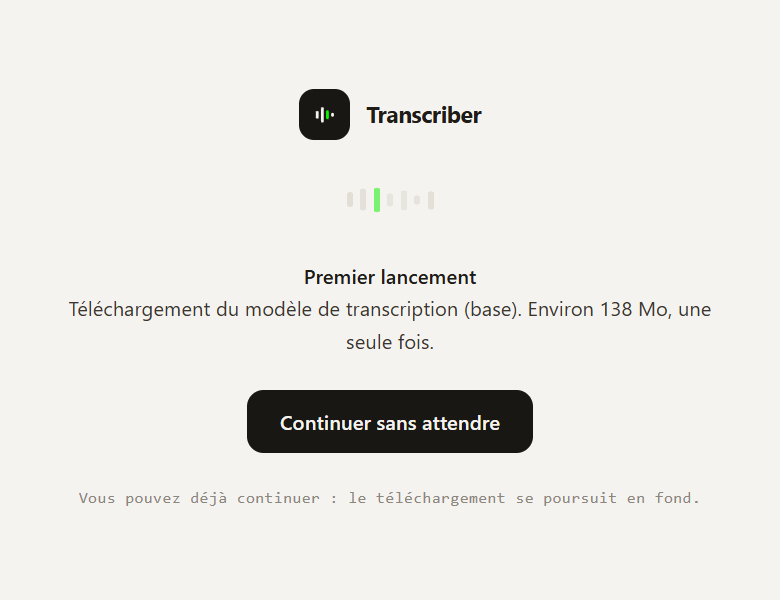

UN .EXE.
PAS UN
ABONNEMENT.
L'installeur embarque tout ce dont le logiciel a besoin : le moteur de transcription, FFmpeg, et faster-whisper pour la transcription locale. Ni Python, ni Docker, ni compte à créer.

| Fichier | Détail |
|---|---|
| AI Video Transcriber Setup 1.1.0.exe | Installeur NSIS · 218,4 Mo à télécharger. C'est la version que vous obtenez aujourd'hui : les fonctions marquées prochaine version ailleurs sur le site n'y sont pas encore. |
| Windows 10 / 11 | 64 bits uniquement |
| Espace disque | Davantage que l'installeur une fois décompressé, plus 138,5 Mo pour le modèle de transcription au premier lancement. La traduction locale, si vous l'activez, ajoutera 646 Mo téléchargés à ce moment-là |
| Connexion | Requise pour les URL et le premier téléchargement de modèle. La consultation de l'historique fonctionne hors ligne |
CE QUI EST EMBARQUÉ
- — Backend FastAPI compilé (PyInstaller), lancé en local sur
127.0.0.1 - — FFmpeg et FFprobe, pour l'extraction et la normalisation audio
- — faster-whisper, pour transcrire sans aucune clé API
- — yt-dlp, qui sait lire plus de 1 700 sites vidéo et podcast
AUCUNE DÉPENDANCE À INSTALLER
Pas de Python à mettre en place, pas de FFmpeg à ajouter au PATH, pas de terminal. L'installeur pose un raccourci et c'est fini.
UTILISABLE SANS CLÉ API
Transcription locale via faster-whisper, résumé et chat en mode dégradé local. Ajoutez une clé plus tard pour l'optimisation IA et la traduction.
VOS DONNÉES RESTENT LOCALES
Votre historique — textes, sous-titres et audio d'origine — est conservé dans %LOCALAPPDATA%\AI-Video-Transcriber. Aucune télémétrie, aucun compte, et rien n'est supprimé sans votre action.
OBTENIR L'INSTALLEUR
Deux chemins : récupérer le binaire publié, ou le construire vous-même à partir des sources.
TÉLÉCHARGER LE BINAIRE
L'installeur est publié dans les releases. Téléchargez le .exe, double-cliquez, suivez les trois écrans habituels.
BINAIRE NON SIGNÉ : WINDOWS AFFICHERA UN AVERTISSEMENT SMARTSCREEN. « INFORMATIONS COMPLÉMENTAIRES » PUIS « EXÉCUTER QUAND MÊME ».
CONSTRUIRE L'INSTALLEUR
La chaîne complète — backend PyInstaller, téléchargement de FFmpeg, empaquetage Electron, installeur NSIS — tient en une commande.
Le résultat atterrit dans desktop/dist-installer/.
APPLE SILICON
Un paquet .dmg arm64 est fabriqué par la CI sur un runner Apple, à chaque version. Il n'a jamais tourné sur un Mac réel : considérez-le comme une préversion.
Il n'est pas signé non plus. Gatekeeper refusera le premier lancement : faites un clic droit sur l'application, choisissez « Ouvrir », puis confirmez. Le double-clic habituel ne propose pas cette issue.
ffmpeg et ffprobe embarqués sont en x86_64 et passent par Rosetta 2 — aucune source ne publie ces deux binaires en arm64 statique. L'application, elle, est native.
Paquet macOSAPRÈS L'INSTALLATION
LANCEZ L'APPLICATION
Le backend démarre en local et la fenêtre s'ouvre dès qu'il répond. Rien à configurer.
COLLEZ UNE URL OU UN FICHIER
N'importe quel lien en http, ou glissez un fichier audio/vidéo de 200 Mo maximum.
AJOUTEZ UNE CLÉ, SI VOUS VOULEZ
Paramètres → endpoint compatible OpenAI. Sans clé, la transcription locale fonctionne déjà.

LE PREMIER
LANCEMENT.
Au tout premier démarrage, l'application télécharge le modèle de transcription : 138 Mo pour le modèle base, une seule fois. C'est le seul téléchargement qu'elle fera jamais d'elle-même.
Vous n'avez pas à attendre : le bouton Continuer sans attendre ouvre l'application immédiatement et le téléchargement se poursuit en arrière-plan. Ensuite, la transcription locale fonctionne sans clé API et sans connexion.
AUTRES ÉDITIONS
Le même logiciel, servi autrement.
DOCKER
Pour un poste Linux/macOS ou un serveur partagé avec l'équipe.
Interface disponible sur http://localhost:8000.
CODE SOURCE
Pour développer, brancher un modèle local, ou l'appeler depuis vos scripts.
Python 3.8+ et FFmpeg requis sur la machine. Détails dans la documentation.